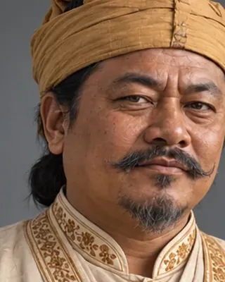

active 1751–1769 · Borbarua and king-maker

Held real power under Rajeswar Singha and made Lakshmi Singha king in 1769. Had the Buranjis collected and many destroyed over references to his low origins.
Record confidence: medium.
Open interactive profile
1751
c. 1750s–1760s